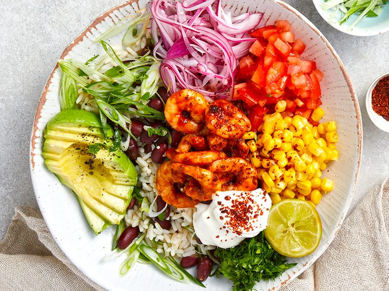

Burrito Bowl

A classic mexican dish
A simple bowl filled with protein, veggies, and carbs to keep you
going throughout the day.
Ingredients
- 2/3 tbsp rice
- 1/2 cup shredded lettuce
- 20g Roma Tomatoes
- 22.7g Avocado
- 18g corn
- 87g black beans
- 43g salsa
Steps
- Prepare rice and set aside
- Chop lettuce, tomato, and avocadoes
- Top rice with the remaining ingredients
Back to main